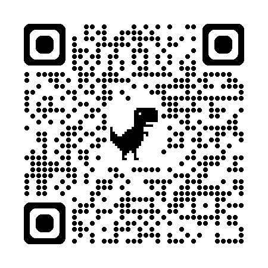

このゲームについて
バイキンズビンゴは、感染症・細菌学の教育キャラクター「バイキンズ®」を使ったビンゴゲームです。楽しみながらキャラクターの顔と名前を覚えることができます。主催者が読み上げるキャラクターを自分のカードでチェックし、縦・横・斜めに5つ揃ったらビンゴです。
🎊 バイキンズビンゴは、ただのビンゴじゃない！
縦・横・斜めのラインビンゴに加えて、スペシャルビンゴが存在します。グラム陽性菌・グラム陰性菌・真菌・非定型菌という「菌の種類」ごとに5体集めると成立する特別役です。キャラクターの分類を意識しながら楽しめます。
縦・横・斜めのラインビンゴに加えて、スペシャルビンゴが存在します。グラム陽性菌・グラム陰性菌・真菌・非定型菌という「菌の種類」ごとに5体集めると成立する特別役です。キャラクターの分類を意識しながら楽しめます。
参加者はそれぞれ異なる番号を入力するため、全員カードの並びが違います。同じ番号を使いまわすと同じカードになるのでご注意ください。
参加者への伝え方
1
QRコードまたはリンクからビンゴカードを開く
スマートフォンのカメラでQRコードを読み取るか、このページ上部のリンクから開いてもらいます。
2
参加者ごとに異なる番号を入力する
ビンゴカード画面が開いたら、参加者ごとに異なる数字を入力します。入力した番号によってカードの並びが決まります。隣の人と同じ番号を使うと同じカードになるので、各自で好きな番号を選んでください。
💡 1〜9999の整数であれば何でもOK。自分だけの番号を選ぼう3
「カードを作る」でゲーム開始
ボタンを押すと5×5のビンゴカードが表示されます。中央マスはサービス（FREE）で最初から穴あき済みです。
4
読み上げられたキャラをタップして穴をあける
主催者がキャラクター名を読み上げたら、自分のカードにいれば画像をタップ→「選択する」で穴あけします。
⚠️ 誤タップしても確認画面でキャンセルできます。右パネルのリストから後で取り消しも可能5
縦・横・斜め5つ揃ったらビンゴ！
リーチになると自動で通知が出ます。5つ揃ったらビンゴ画面が表示されるので、すぐに主催者に声をかけてください。
主催者向け操作方法
⚠️ 重要：実際のイベント前に必ず練習してください。
主催者ツールはページを開いた時点でランダムな引き順が決まります。途中でページを更新したりブラウザを閉じると引き順がリセットされてしまいます。本番前にひと通り操作を試しておくことを強く推奨します。
主催者ツールはページを開いた時点でランダムな引き順が決まります。途中でページを更新したりブラウザを閉じると引き順がリセットされてしまいます。本番前にひと通り操作を試しておくことを強く推奨します。
1
主催者ツールを開く（同じタブで遷移）
上部の「主催者ツール」ボタンから開きます。ページを開いた瞬間に32体のランダムな引き順が自動で確定します。
2
「次を引く」で1体ずつ抽選
ボタンを押すたびにキャラクターが1体表示されます。最初に押した時点で引き順がロックされ、変更できなくなります。
🔒 ロック後はリセットのみ可能。リセットには2段階の確認が必要です3
キャラクター名を読み上げる
画面に表示されたキャラクター名を参加者に向けて読み上げます。「大画面表示」ボタンでプロジェクター投影用の全画面表示にも切り替えられます。
4
ビンゴ申告を確認する
参加者からビンゴの申告があったら読み上げ済みリストと照合して確認します。先着1名のみ有効です。
注意事項：ゲーム中はブラウザのタブを閉じない・ページを更新しないようにしてください。スリープや画面ロックは問題ありません。万が一リセットが必要な場合は、2段階の確認を経てリセットできます。
リーチとビンゴ
| 通知 | 条件 | ポイント |
|---|---|---|
| リーチ | 1列で残り1マス | あと1体でビンゴ |
| ダブルリーチ | 2列同時にリーチ | 2方向でビンゴ目前 |
| 3重リーチ〜 | 3列以上同時リーチ | どこからでも来る！ |
| BINGO! | 縦・横・斜めいずれか5マス | 先着1名まで有効 |
判定ラインは縦5・横5・斜め2の計12本。中央のFREEマスは最初から穴あき済みなので、そのラインは4マスでビンゴになります。
スペシャルビンゴ
縦・横・斜めのラインビンゴとは別に、同じ分類の菌を5体集めると成立する特別役です。ラインビンゴより先に成立することもあります。FREEマスのキャラクターもどの分類に属するかを確認しておきましょう。
| 役名 | 対象グループ | 成立条件 |
|---|---|---|
| 🧫 オール陽性 | グラム陽性菌 肺炎球菌・黄色ブドウ球菌・A/B群連鎖球菌・ディフィシル・タンソ |
カード内の陽性菌を 5体（または全体）穴あけ |
| 🦠 オール陰性 | グラム陰性菌 大腸菌・緑膿菌・コレラ菌・サルモネラなど9体 |
カード内の陰性菌を 5体穴あけ |
| 🍄 オール真菌 | 真菌 カンジダ・アスペルギルス・クリプトコックスなど11体 |
カード内の真菌を 5体穴あけ |
| 🔬 オール非定型 | 非定型・抗酸菌 マイコプラズマ・レジオネラ・クラミジア2体・結核菌・MAC |
カード内の非定型菌を 5体（または全体）穴あけ |
カードに3体未満しか入っていないグループは対象外になります。FREEマスのキャラクターもカウントされます。タップすると分類を確認できます。
リンク
バイキンズキャラクター全32体
カードに登場するのは32体のうちランダムに選ばれた25体です。すべてのキャラクターが毎回登場するわけではありません。
| カード | キャラクター名 | 学名 | メモ |
|---|---|---|---|
| グラム陽性球菌 | |||
 |
ハイエンキューキン王 | Streptococcus pneumoniae | 肺炎球菌 |
 |
ブドウキューキン族（黄色） | Staphylococcus aureus | 黄色ブドウ球菌 |
 |
Ａ軍連隊 | Streptococcus pyogenes | A群溶連菌 |
 |
Ｂ軍連隊 | Streptococcus agalactiae | B群溶連菌 |
| グラム陰性桿菌・特殊細菌 | |||
 |
インフルエンザキンXV世女王 | Haemophilus influenzae | グラム陰性桿菌 |
 |
マイコプラズマ姫 | Mycoplasma pneumoniae | 細胞壁なし |
 |
レジオネラ爺や | Legionella pneumophila | 細胞内寄生 |
 |
ダイチョーキン | Escherichia coli | 大腸菌 |
 |
ベロダシ | Enterohemorrhagic E. coli (EHEC) | ベロ毒素産生 |
 |
シゲ裸族 | Shigella | 赤痢菌 |
 |
クレブシエ裸族 | Klebsiella pneumoniae | 肺炎桿菌 |
 |
ビブリ男コレラ | Vibrio cholerae | コレラ菌 |
 |
リョクノーキン | Pseudomonas aeruginosa | 緑膿菌 |
 |
アシネトバクター | Acinetobacter baumannii | 多剤耐性 |
 |
チフス和尚 | Salmonella Typhi | 腸チフス菌 |
 |
クラミジア・ニューモニエ侯 | Chlamydophila pneumoniae | 細胞内寄生 |
 |
クラミジア・シッタ氏 | Chlamydophila psittaci | オウム病 |
| 抗酸菌 | |||
 |
ケッカクキン | Mycobacterium tuberculosis | 結核菌 |
 |
MAC | Mycobacterium avium complex | 非結核性抗酸菌 |
| 芽胞形成菌 | |||
 |
ディフィシル | Clostridioides difficile | 芽胞形成嫌気性菌 |
 |
タンソ | Bacillus anthracis | 炭疽菌 |
| 真菌（輸入真菌症・海賊系） | |||
 |
コクシジオイデス海賊王 | Coccidioides immitis | 4類感染症（輸入） |
 |
ヒストプラズ魔王 | Histoplasma capsulatum | 輸入真菌症 |
 |
パラコクシジオイデス | Paracoccidioides brasiliensis | 輸入真菌症 |
 |
ミセス・ブラスト | Blastomyces dermatitidis | 輸入真菌症 |
 |
タラロミセス・マルネッフェイ | Talaromyces marneffei | 東南アジア |
| 真菌（国内常在・日和見） | |||
 |
クリプトコックス・ネオフォルマンス | Cryptococcus neoformans | 莢膜が特徴 |
 |
クリプトコックス・ガッティ | Cryptococcus gattii | 輸入真菌症 |
 |
カンジダ | Candida albicans | 日和見真菌 |
 |
アスペルギルス | Aspergillus fumigatus | 糸状菌 |
| 非病原性真菌（食品・発酵） | |||
 |
コーボくん | Saccharomyces cerevisiae | 非病原性酵母 |
 |
こうじ君 | Aspergillus oryzae | 非病原性麹菌 |